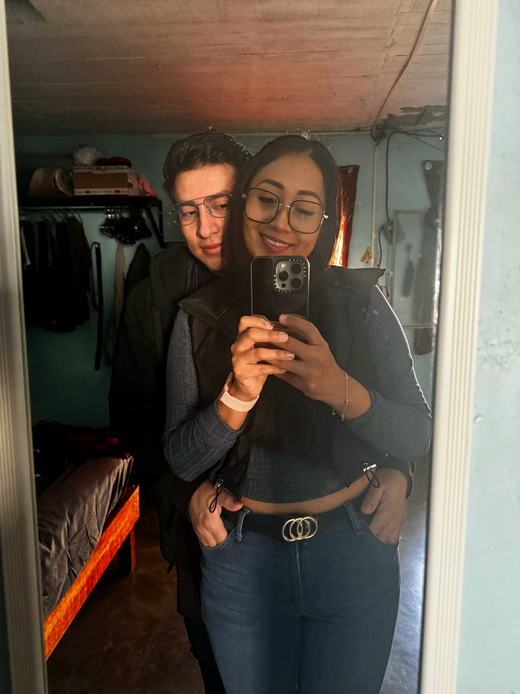
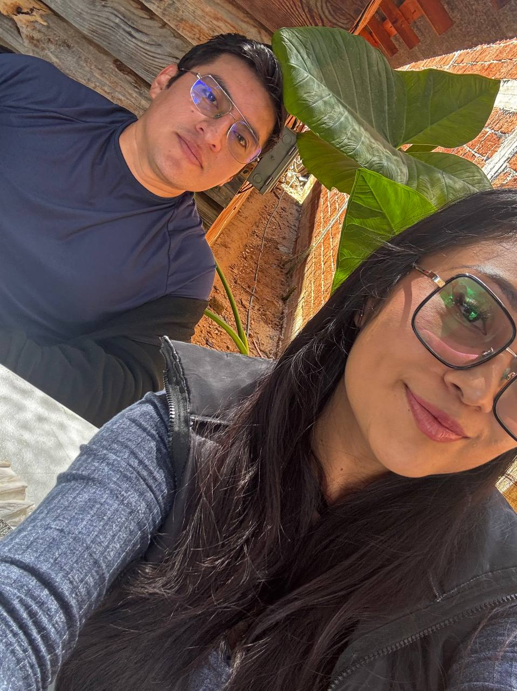

commit 0010 Date: 24 Jan 2026 🟡 Mirror Moment 🟢 Git Message feat: ordinary moments became unforgettable ⚪ Story Aquella mañana desperté en tu casa. No había ningún plan especial. Simplemente habíamos quedado de ir a desayunar un poco más tarde. Mientras nos preparábamos para salir, me detuve un momento frente al espejo. Sin decir mucho, simplemente te acercaste y me abrazaste. Al vernos en el reflejo, se me ocurrió decir: —Foto. Y así nació una de las fotografías que más me gustan de nosotros. No porque fuera el mejor lugar. Ni porque hubiera algo extraordinario alrededor. Simplemente porque era la primera vez que nos tomábamos una fotografía así. Con esa cercanía. Con esa confianza. Después salimos a desayunar y el día continuó como cualquier otro. En ese momento solo era una foto más. Con el tiempo entendí que algunos recuerdos no necesitan un gran escenario. A veces un abrazo, un espejo y un día cualquiera son suficientes para que una fotografía termine significando mucho más de lo que imaginábamos. 🟣 Developer Notes First mirror photo archived. Comfort level naturally increased. Ordinary moments successfully documented. 🟢 Impact on Project First mirror memory archived. New level of trust documented. Another ordinary day became unforgettable. 🟢 Commit Status ✔ Completed ✔ Reviewed ✔ Ready for Release
🖼 Recuerdos

Sin decir mucho, simplemente te acercaste y me abrazaste.

Un abrazo, un espejo, un día cualquiera.

Desayuno.
1 / 3
⬅ Regresar al Commit History